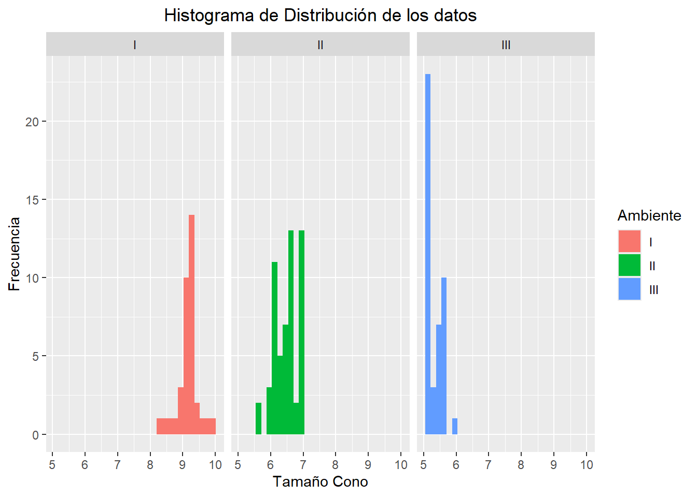
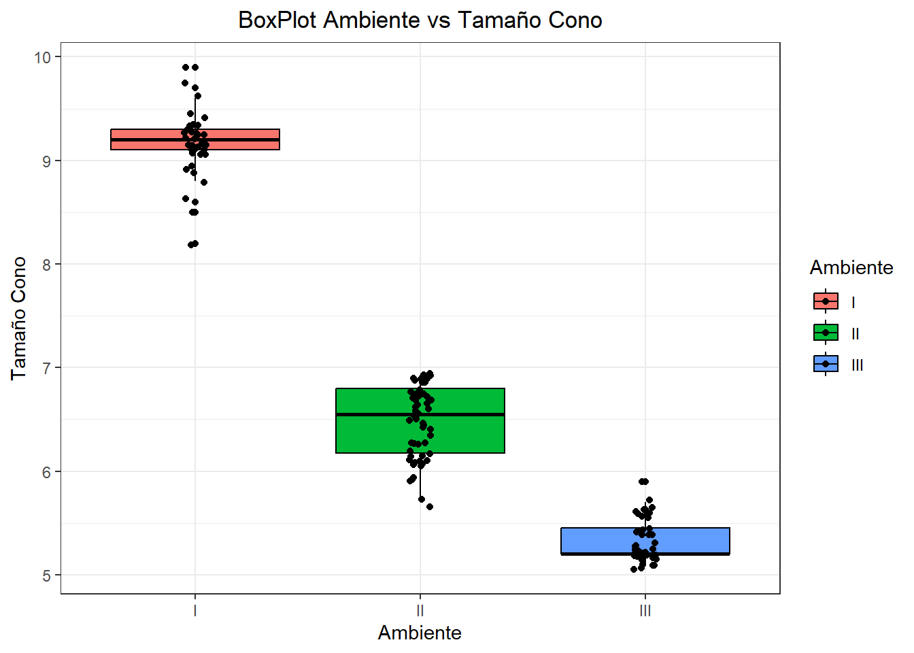
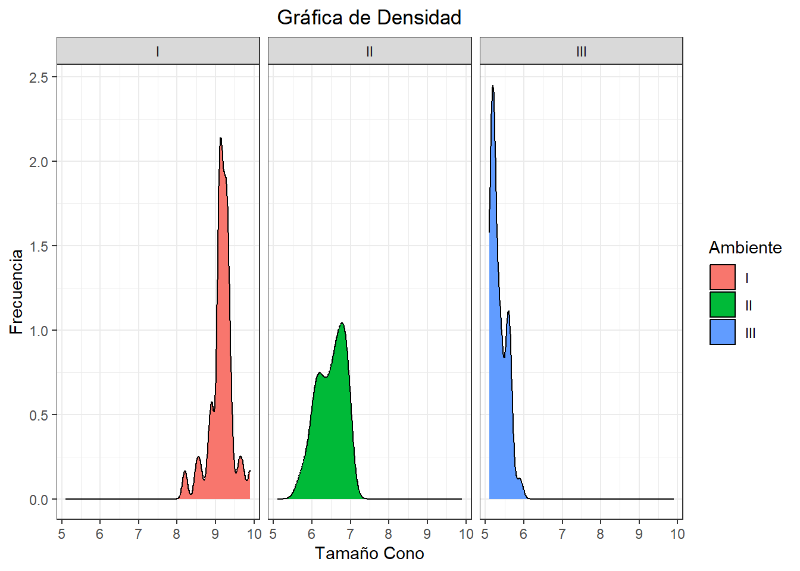
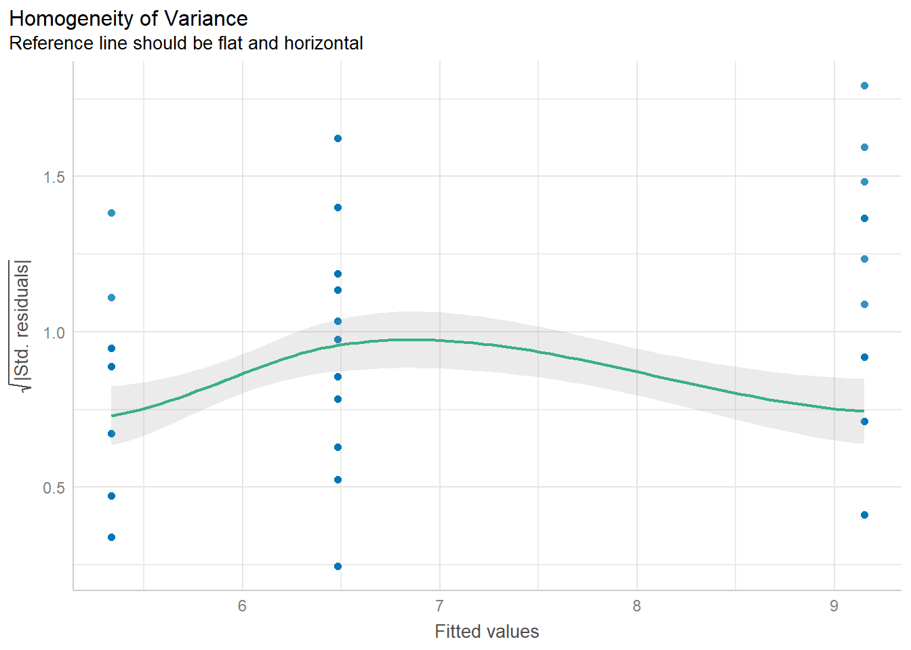
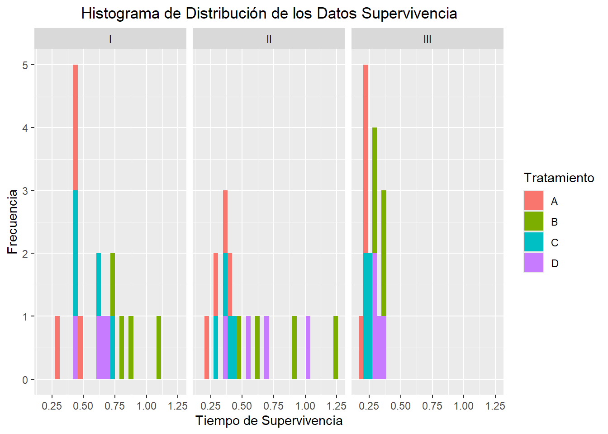
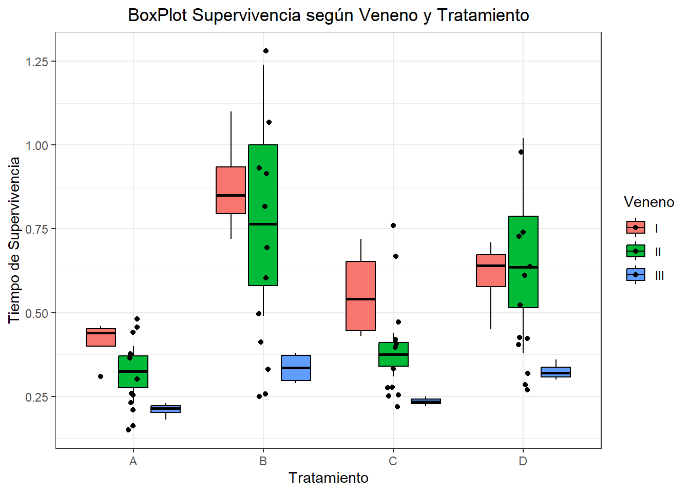
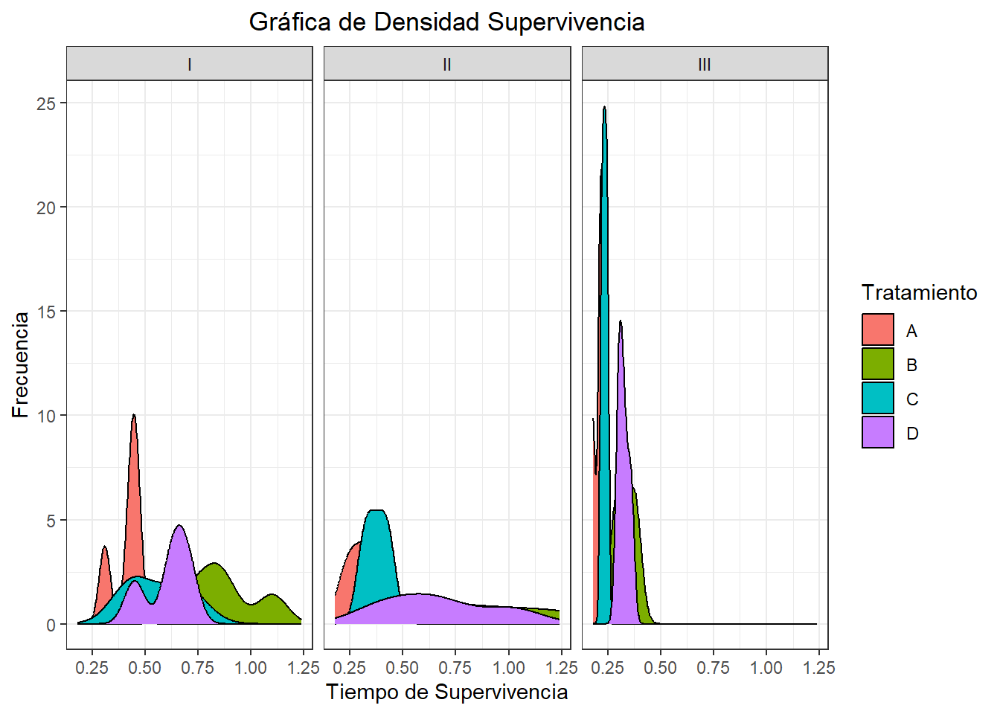

En todos los puntos del taller debe realizar todos los siguientes pasos:
Explorar visualmente la distribución del conjunto de datos asociado a la investigación.
Plantear la hipótesis nula y la alternativa teniendo en cuenta la pregunta de investigación mencionada.
Defina el nivel de significancia (\(\alpha\)) y justificar su selección. iiv. Evaluar la normalidad de las variables que lo requieran.
Escoger la prueba estadística adecuada (validar que se cumplan todos los supuestos para su selección).
1. Ardillas y Pinos [2.5]
Los datos pines-squirrels.tsv representan el tamaño de cono (masa) de una especie de pino en 16 sitios de estudio en tres tipos de ambientes en el occidente de USA (Edelaar & Benkman, 2006). Los tres ambientes hacían referencia a:
environment coneMass
1 I 9.6
2 I 9.4
3 I 8.9
4 I 8.8
5 I 8.5
6 I 8.2
7 I 9.2
8 I 9.1
9 I 9.9
10 I 9.3
11 I 9.1
12 I 9.3
13 I 9.2
14 I 9.1
15 I 9.3
16 I 9.1
17 I 8.9
18 I 9.2
19 I 9.1
20 I 9.3
21 I 9.1
22 I 9.2
23 I 8.6
24 I 9.4
25 I 9.1
26 I 9.3
27 I 9.3
28 I 9.1
29 I 8.9
30 I 9.2
31 I 9.1
32 I 9.3
33 I 9.7
34 I 9.3
35 I 9.2
36 I 9.1
37 II 6.2
38 II 6.3
39 II 6.4
40 II 6.1
41 II 6.3
42 II 5.9
43 II 6.6
44 II 6.7
45 II 6.3
46 II 6.9
47 II 6.6
48 II 6.5
49 II 5.7
50 II 6.9
51 II 6.6
52 II 6.5
53 II 6.7
54 II 6.7
55 II 6.9
56 II 6.6
57 II 6.5
58 II 6.9
59 II 6.9
60 II 6.9
61 II 6.8
62 II 6.1
63 II 6.7
64 II 6.7
65 II 6.9
66 II 6.6
67 II 6.5
68 II 6.9
69 II 6.9
70 II 6.1
71 II 6.1
72 II 6.7
73 II 6.1
74 II 6.9
75 II 6.1
76 II 6.4
77 II 6.9
78 II 6.3
79 II 6.8
80 II 6.1
81 II 6.9
82 II 5.9
83 II 5.7
84 II 5.9
85 II 6.1
86 II 6.9
87 II 6.3
88 II 6.7
89 II 6.1
90 II 6.7
91 II 6.4
92 II 6.2
93 III 5.6
94 III 5.6
95 III 5.4
96 III 5.2
97 III 5.3
98 III 5.1
99 III 5.2
100 III 5.2
101 III 5.7
102 III 5.6
103 III 5.4
104 III 5.2
105 III 5.2
106 III 5.6
107 III 5.6
108 III 5.4
109 III 5.2
110 III 5.6
111 III 5.4
112 III 5.2
113 III 5.2
114 III 5.6
115 III 5.4
116 III 5.2
117 III 5.6
118 III 5.4
119 III 5.2
120 III 5.1
121 III 5.6
122 III 5.4
123 III 5.2
124 III 5.3
125 III 5.1
126 III 5.2
127 III 5.2
128 III 5.9
129 III 5.1
130 III 5.1
131 III 5.2
132 III 5.2
133 III 5.1
134 III 5.3
135 III 5.2
136 III 5.2
graf_ard <-ggplot(data=ard,aes(x=coneMass,fill=environment))+geom_histogram()+facet_wrap(~environment)+labs(x="Tamaño Cono", y="Frecuencia",fill="Ambiente", title="Histograma de Distribución de los datos")+theme(plot.title =element_text(hjust=0.5))graf_ard
`stat_bin()` using `bins = 30`. Pick better value with `binwidth`.

boxplot_ard<-ggplot(ard, aes(x = environment, y = coneMass, fill = environment)) +geom_boxplot(color='black') +geom_jitter(width =0.05, height =0.05) +ylab("Tamaño Cono") +xlab("Ambiente") +theme_bw()+labs(title="BoxPlot Ambiente vs Tamaño Cono",fill="Ambiente")+theme(plot.title =element_text(hjust=0.5))boxplot_ard

densidad_ard <-ggplot(ard, aes(coneMass, fill=environment)) +facet_wrap(vars(environment)) +geom_density() +labs(x ='Tamaño Cono', y ='Frecuencia',fill="Ambiente", title ="Gráfica de Densidad") +theme_bw()+theme(plot.title =element_text(hjust=0.5))densidad_ard

Se plantea que: \(H_0:\) El tamaño de cono en los 3 ambientes presentan igual promedio. \(H_a:\) Al menos uno o más de las medias del tamaño de cono es diferente a las medias de tamaño de cono de los otros ambientes
El nivel de significancia escogido es de 0.01, ya que este valor es más estricto en rechazar la hipótesis nula, esto con el propósito de tener la mayor seguridad posible de que si se rechaza la hipótesis nula es porque existe una probababilidad muy baja de cometer un error al hacerlo. Por ende, habría mayor certeza de la hipótesis alternativa es verdadera.
Primero se genera el test ANOVA y sus respectivos chequeos para conocer si cumple las asunciones del test.
library(tidyverse)
── Attaching core tidyverse packages ──────────────────────── tidyverse 2.0.0 ──
✔ dplyr 1.1.4 ✔ stringr 1.5.1
✔ forcats 1.0.0 ✔ tibble 3.2.1
✔ lubridate 1.9.4 ✔ tidyr 1.3.1
✔ purrr 1.0.2
── Conflicts ────────────────────────────────────────── tidyverse_conflicts() ──
✖ dplyr::filter() masks stats::filter()
✖ dplyr::lag() masks stats::lag()
ℹ Use the conflicted package (<http://conflicted.r-lib.org/>) to force all conflicts to become errors
library(performance)
Warning: package 'performance' was built under R version 4.4.3
Warning in simpleLoess(y, x, w, span, degree = degree, parametric = parametric,
: reciprocal condition number 5.5782e-16
Warning in simpleLoess(y, x, w, span, degree = degree, parametric = parametric,
: There are other near singularities as well. 14.707
Warning in predLoess(object$y, object$x, newx = if (is.null(newdata)) object$x
else if (is.data.frame(newdata))
as.matrix(model.frame(delete.response(terms(object)), : pseudoinverse used at
5.315
Warning in predLoess(object$y, object$x, newx = if (is.null(newdata)) object$x
else if (is.data.frame(newdata))
as.matrix(model.frame(delete.response(terms(object)), : neighborhood radius
3.835
Warning in predLoess(object$y, object$x, newx = if (is.null(newdata)) object$x
else if (is.data.frame(newdata))
as.matrix(model.frame(delete.response(terms(object)), : reciprocal condition
number 5.5782e-16
Warning in predLoess(object$y, object$x, newx = if (is.null(newdata)) object$x
else if (is.data.frame(newdata))
as.matrix(model.frame(delete.response(terms(object)), : There are other near
singularities as well. 14.707

De acuerdo con el nivel de significancia elegido los chequeos cumplen con los supuestos. Por tal motivo se elige el estadístico de prueba F.
i-V. Realice los pasos mencionados anteriormente. a. ¿Existen diferencias en el tamaño de cono entre los tres ambientes?
Según el valor-P obtenido en ANOVA se rechaza la hipótesis nula, es decir que, las medias del tamaño de los conos es diferente.
¿Cuál es el ambiente con mayor tamaño de cono? Realice una prueba de comparaciones múltiples y conclusión biológica.
TukeyHSD(anova_ard)
Tukey multiple comparisons of means
95% family-wise confidence level
Fit: aov(formula = coneMass ~ environment, data = ard)
$environment
diff lwr upr p adj
II-I -2.667857 -2.819511 -2.516203 0
III-I -3.815909 -3.975450 -3.656368 0
III-II -1.148052 -1.291068 -1.005036 0
Según la prueba de comparación múltiple de medias, el valor-P para todas las parejas creadas es de cero. Esto indica que para todas la pruebas de comparación generadas por la prueba Tukey se rechaza la hipótesis nula de que las medias son iguales, es decir que todas los promedios del tamaño de cono tienen valores diferentes para cada ambiente. No obstante, en el gráfico de BoxPlot se observa que el ambiente con mayor media en tamaño de cono es el ambiente I.
2. Supervivencia al Veneno [2.5 puntos]
Los datos survival.tsv corresponden a los resultados después del siguiente experimento: Se midió el tiempo de supervivencia de una serie de animales a los cuales se les asignó aleatoriamente un tipo de veneno (I, II y III) y un tipo de tratamiento (A, B, C, D).
¿Existen diferencias entre los tratamientos?
En las gráficas presentadas para representar los datos de tratamientos según tres tipos de veneno, se logra observar que, si existen diferencias entre los diferentes tratamientos y entre el mismo tipo de tratamiento para los distintos venenos.
¿Qué tratamiento afectó en mayor medida la supervivencia?
Se observa que para los tres tipos de venenos, el tratamiento que más influyó en el tiempo de vida es el Tratamiento A. Este tratamiento registra con mayor frecuencia los menores tiempos de vida registrados.
¿Hay diferencias entre los venenos? ¿Qué veneno afectó en menor medida la supervivencia?
De acuerdo con el histograma de distribución de los datos, el veneno III tiene todos los tratamientos concentrados en un lapso de tiempo de vida de 0.17 a 0.375 aproximadamente. Mientras que, los venenos I y II tienen el valor de tiempo de vida más variable.
surv <-read.csv("survival.tsv",sep="")surv
Tratamiento Veneno Supervivencia
1 A I 0.31
2 A I 0.45
3 A I 0.46
4 A I 0.43
5 A II 0.36
6 A II 0.29
7 A II 0.40
8 A II 0.23
9 A III 0.22
10 A III 0.21
11 A III 0.18
12 A III 0.23
13 B I 0.82
14 B I 1.10
15 B I 0.88
16 B I 0.72
17 B II 0.92
18 B II 0.61
19 B II 0.49
20 B II 1.24
21 B III 0.30
22 B III 0.37
23 B III 0.38
24 B III 0.29
25 C I 0.43
26 C I 0.45
27 C I 0.63
28 C I 0.72
29 C II 0.44
30 C II 0.35
31 C II 0.31
32 C II 0.40
33 C III 0.23
34 C III 0.25
35 C III 0.24
36 C III 0.22
37 D I 0.45
38 D I 0.71
39 D I 0.66
40 D I 0.62
41 D II 0.56
42 D II 1.02
43 D II 0.71
44 D II 0.38
45 D III 0.30
46 D III 0.36
47 D III 0.31
48 D III 0.33
graf_surv <-ggplot(data=surv,aes(x=Supervivencia,fill=Tratamiento))+geom_histogram()+facet_wrap(~Veneno)+labs(x="Tiempo de Supervivencia", y="Frecuencia",fill="Tratamiento", title="Histograma de Distribución de los Datos Supervivencia")+theme(plot.title =element_text(hjust=0.5))graf_surv
`stat_bin()` using `bins = 30`. Pick better value with `binwidth`.

boxplot_surv<-ggplot(surv, aes(x = Tratamiento, y = Supervivencia, fill = Veneno)) +geom_boxplot(color='black') +geom_jitter(width =0.05, height =0.05) +ylab("Tiempo de Supervivencia") +xlab("Tratamiento") +theme_bw()+labs(title="BoxPlot Supervivencia según Veneno y Tratamiento",fill="Veneno")+theme(plot.title =element_text(hjust=0.5))boxplot_surv

densidad_surv <-ggplot(surv, aes(Supervivencia, fill=Tratamiento)) +facet_wrap(vars(Veneno)) +geom_density() +labs(x ='Tiempo de Supervivencia', y ='Frecuencia',fill="Tratamiento", title ="Gráfica de Densidad Supervivencia") +theme_bw()+theme(plot.title =element_text(hjust=0.5))densidad_surv

Se plantea una hipótesis nula para cada factor y la interacción entre estos.
Veneno:
\(H_0:\) El promedio de tiempo de supervivencia de cada veneno es el mismo. \(H_a:\) Al menos uno o más de las medias del tiempo de supervivencia de cada veneno es diferente.
Tratamiento:
\(H_0:\) El promedio de tiempo de supervivencia de cada tratamiento es el mismo. \(H_a:\) Al menos uno o más de las medias del tiempo de supervivencia de cada tratamiento es diferente.
Interacción entre los Venenos y los Tratamientos:
\(H_0:\) El promedio de tiempo de supervivencia de cada veneno entre los diferentes tratamientos es el mismo. \(H_a:\) Al menos uno o más de las medias del tiempo de supervivencia de cada veneno entre los diferentes tratamientos es diferente.
El nivel de significancia escogido es de 0.01, ya que este valor es más estricto en rechazar la hipótesis nula, esto con el propósito de tener la mayor seguridad posible de que si se rechaza la hipótesis nula es porque existe una probababilidad muy baja de cometer un error al hacerlo. Por ende, habría mayor certeza de la hipótesis alternativa es verdadera.
Primero se genera el test ANOVA múltiple y sus respectivos chequeos para conocer si cumple las asunciones del test.
De acuerdo con el nivel de significancia elegido no hay homocesdasticidad ni normalidad en los residuos. Por tal motivo se realiza la prueba Sheirer Ray Hare, donde el estadístico de prueba es chi-cuadrado.
library(rcompanion)
Warning: package 'rcompanion' was built under R version 4.4.3
library(DescTools)
Warning: package 'DescTools' was built under R version 4.4.3
library(multcomp)
Warning: package 'multcomp' was built under R version 4.4.3
Cargando paquete requerido: mvtnorm
Warning: package 'mvtnorm' was built under R version 4.4.3
Cargando paquete requerido: survival
Cargando paquete requerido: TH.data
Warning: package 'TH.data' was built under R version 4.4.3
Cargando paquete requerido: MASS
Adjuntando el paquete: 'MASS'
The following object is masked from 'package:dplyr':
select
Adjuntando el paquete: 'TH.data'
The following object is masked from 'package:MASS':
geyser
scheirerRayHare(Supervivencia ~ Veneno * Tratamiento, data = surv)
DV: Supervivencia
Observations: 48
D: 0.9988602
MS total: 196
Según el test Scheirer-Ray-Hare el efecto del veneno y los tratamientos tiene un afecto sobre la supervivencia de forma separada, ya que se rechazan sus respectivas hipótesis nulas. Por otro lado, el test sugiere que, la interacción entre los diferentes tipos de tratamiento y los distintos venenos no influye en la supervivencia de los sujetos, ya que el valor-p reportado para este caso acepta la hipótesis nula de que el promedio de tiempo de supervivencia de cada veneno entre los diferentes tratamientos es el mismo.
¿Existe interacción? Incluya el Valor-P y el gráfico.
El test Scheirer-Ray-Hare indica que la interacción entre los dos factores no es significativa, es decir que los efectos de un factor no dependenden del otro.
gra<-ggplot(surv, aes(x = Tratamiento, y = Supervivencia, color =as.factor(Veneno), group = Veneno)) +stat_summary(fun = mean, geom ="line", size =1)
Warning: Using `size` aesthetic for lines was deprecated in ggplot2 3.4.0.
ℹ Please use `linewidth` instead.
stat_summary(fun = mean, geom ="point", size =3)
geom_point: na.rm = FALSE
stat_summary: fun.data = NULL, fun = function (x, ...)
UseMethod("mean"), fun.max = NULL, fun.min = NULL, fun.args = list(), na.rm = FALSE, orientation = NA
position_identity
labs(title ="Interacción entre Veneno y Tratamiento",x ="Tratamiento", y ="Supervivencia",color ="Veneno") +theme_minimal()